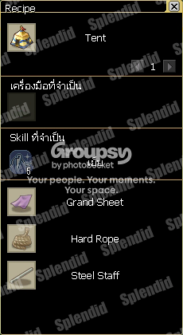
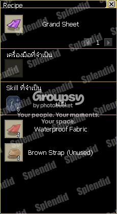

ขอรายลเอียด วัสดุทำ Tent หน่อยสิครับ เอาเป็นลิ้งค์ก็ได้ T^T หลายหนาเกินเหนื่อยๆ
ขอบคุณคร้าบบบบ
ขอบคุณคร้าบบบบ
http://eco.froztic.in.th/archive/ecofanclub/
http://eco.froztic.in.th/archive/ecofanclub/viewtopic.php?f=16&t=8000
platongtatee เขียน:ขอรายลเอียด วัสดุทำ Tent หน่อยสิครับ เอาเป็นลิ้งค์ก็ได้ T^T หลายหนาเกินเหนื่อยๆ
ขอบคุณคร้าบบบบ



mogmax เขียน:อือคือ ตอนนี้99 แล้ว
สเตตัสมันไปประมานนี้
str 99+10
agi 91+21
dex 40+19
vit 40+8
กะจะรีเพราะstr กดผิดเยอะเกิน
อยากรุstr ของเพื่อนๆเท่าไหร่กานบ้าง
อีก6จ็อบจะเปลี่ยนกลับไปเทรซฮัน
เอา5สกิล ของเอ็กโพเรอร์ ประมานนี้
1.จิ้มตา
2.นั่งในดัน
3.Gathering Class
4.แปะๆ
5.เอาอาไรดี
มุดในดัน ใช้ตอนในดันส่วนตัว เพราะ เวลาไม่อยู่ เปิดเต้นไม่ได้
แกล้งตาย ใช้ตอนใกล้ตายในวอ
ตีหินเลือด - - อนาคตที่ยาวไกล จนอยุ
กับดักหยุด ไม่เคยลอง ใครลองแล้วถ้าดีบอกหน่อย
อยากได้แส้+คริ +เท่าไหร่จึงจะเห็นผลครับ ตอนนี้ไอใช้คริให้ โซนิคจะติดคริประมาน1ทีใน10ครั้ง
ปล.มากไปไหม ขอบคุนครับ
แบ่งแบงค์ เขียน:สกิลSonic Whip ร่ายกี่วิหรอครับแล้วลดด้วยเอจิรึป่าว เหนคนร่ายซะช้าเต่าเรียกพี่- -
-คนหน้าตาดี- เขียน:Luxurious Feather''''' ได้จากมอนที่ไมไมป่ะ?


 มานเจ๋งพอที่จาสลับกลับไปเอาม่ะนิ
มานเจ๋งพอที่จาสลับกลับไปเอาม่ะนิ